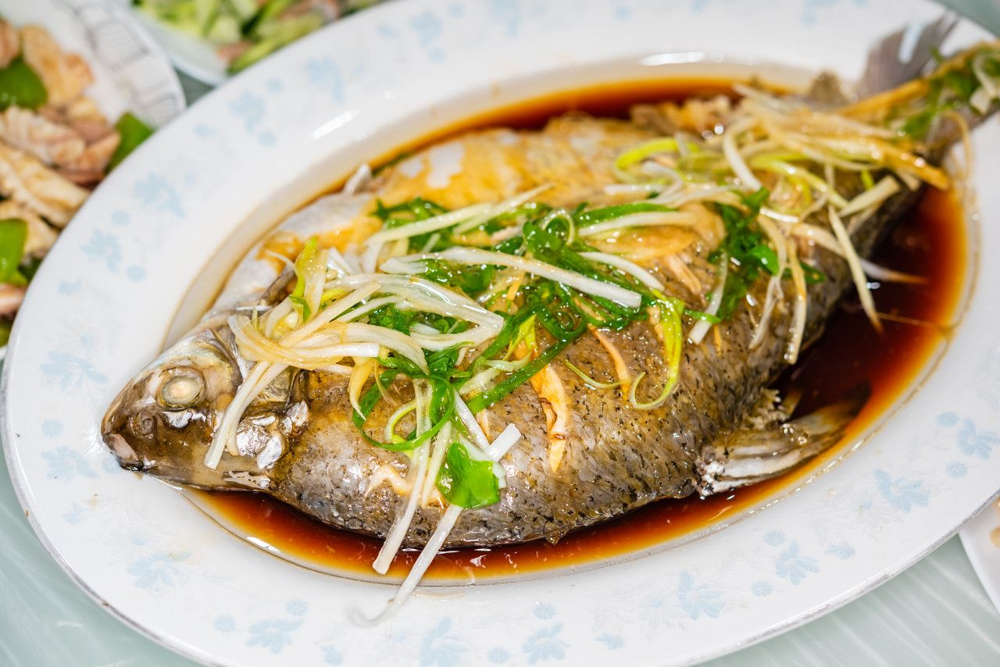

清蒸武昌鱼
头号名片 · 一条进过史书的鱼武昌鱼学名团头鲂，因为鄂州古称武昌而得名。1955 年，鱼类学家易伯鲁在梁子湖把它正式定名。挑鱼有个老办法：正宗团头鲂有 13 对半鱼刺——这话我从小听，杀鱼时长辈会数给你看。
它最早的文字记录，是《三国志》里引的那句「宁饮建业水，不食武昌鱼」。后来毛主席写「才饮长沙水，又食武昌鱼」，这条鱼就彻底出名了。做法上，清蒸最见本味，火候刚过一点，肉就柴了。
本地吃法
别只会清蒸。风干武昌鱼蒸腊肉，鱼香混着腊香，很下饭；红烧则让酱汁裹满鱼肉，配米饭最好。